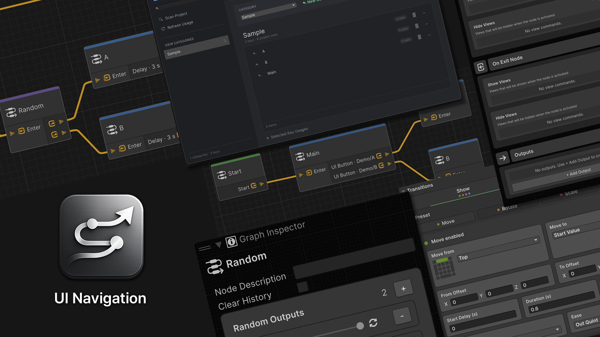

UITK Navigation
UITK Navigation is a screen-flow package for Unity UI Toolkit. Author navigation with Graph Toolkit, animate NavElement visibility with LitMotion, and display panel-local LIFO popups.

Features
- Compiles
.uinavgraphsources into runtimeUINavigationAssetassets on save. - Provides
NavElement,NavButton, andNavTogglefor UI Builder and UXML. - Combines Move, Rotate, Scale, and Fade channels into Show/Hide transitions.
- Supports Back/Forward history, delays, Toggle branches, and scene or application actions.
- Searches and renames project-wide UI addresses through the Key Catalog.
- Displays popups with async results and focus restoration through
UIPopupHostorUIPopupStack.
Start with Requirements, Installation, and Getting started.
Note
This documentation targets Unity 6000.6.0b5. Unity 6.6 is the recommended baseline.